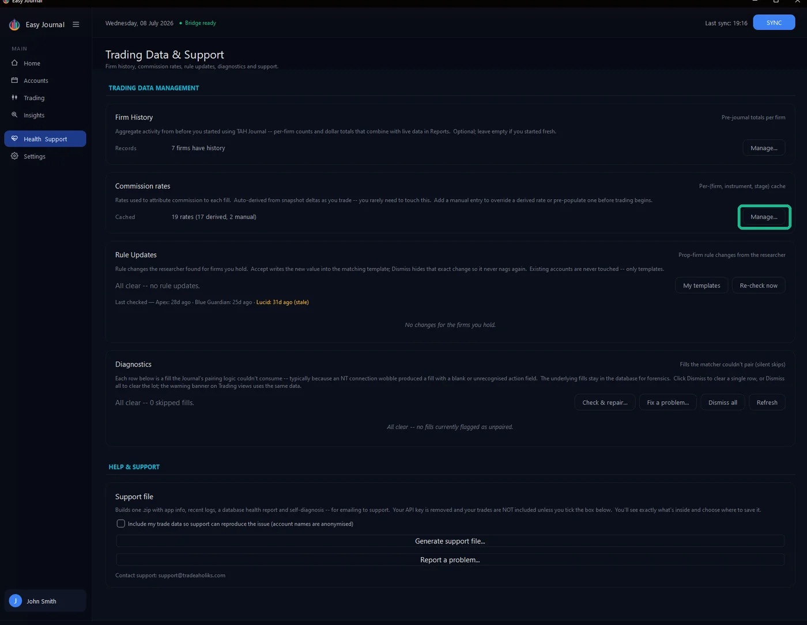
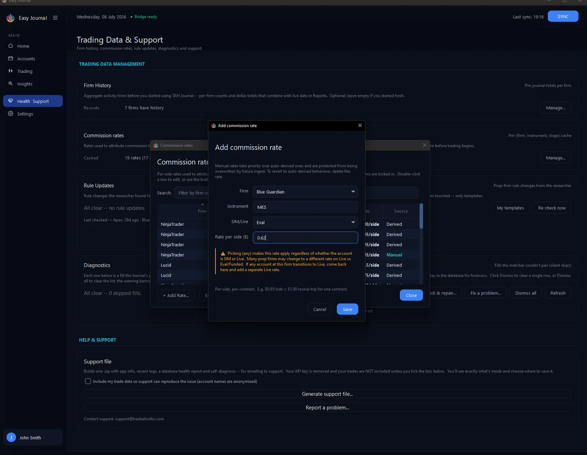
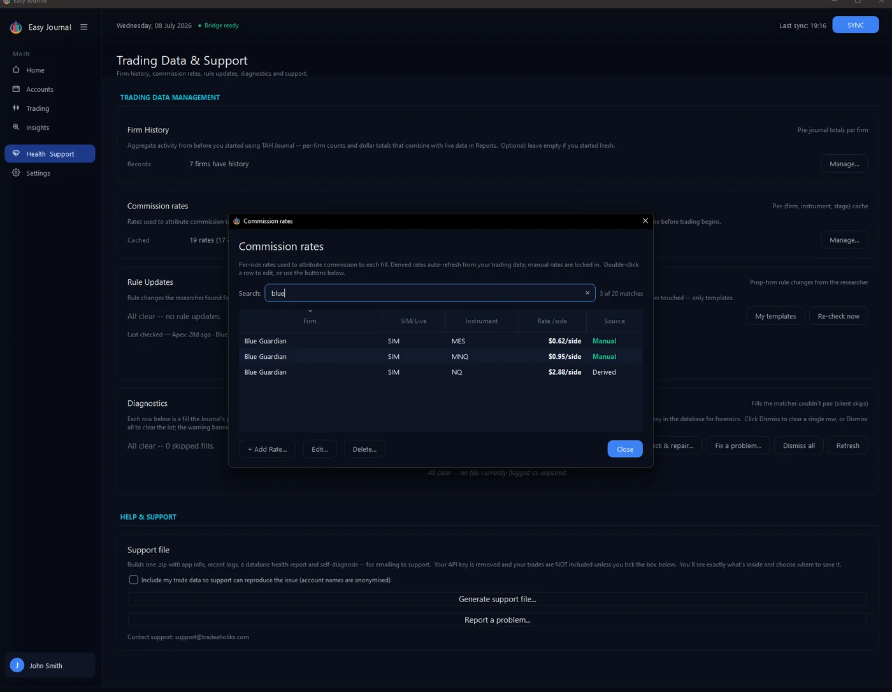

Where to find it 1. Open Health & Support in the left sidebar, and click Manage... on the Commission rates card.

Adding a manual rate 2. Click + Add Rate... and fill the form: the firm; the instrument (MNQ, NQ, ES, MES - no contract month needed); the stage bucket (Eval, Funded, Live... - rates often differ between eval/funded data feeds and live accounts, so they are kept separate); and the rate per side in dollars. Per side means one direction: $0.62/side is $1.24 for a complete round-trip, per contract.

3. Click Save. The rate appears in the cache marked Manual - searchable by firm:

Removing a rate Select a row and click Delete.... The confirmation explains what happens next: a derived rate will simply re-derive from clean trading data, but a manual rate stays gone unless you add it again:
